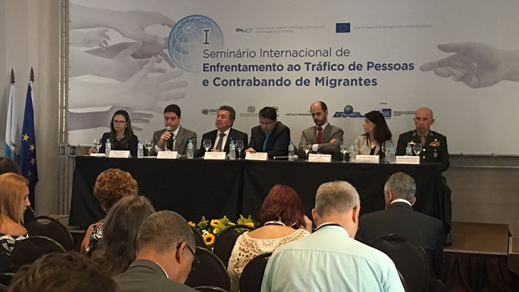

 Nos dias 19 e 20 de setembro de 2017, na cidade do Rio de Janeiro foi realizado o I Seminário Internacional de Enfrentamento ao Tráfico de Pessoas e Contrabando de Migrantes. Representantes de cerca de 200 instituições do Governo e da Sociedade Civil ,a partir da avaliação externa e das propostas da consulta pública, apresentaram proposições para o III PNETP.
Entre outubro de 2017 e março de 2018 11 ministérios realizaram uma análise de factibilidade das propostas, agrupamento das metas e identificação dos órgãos responsáveis e coresponsáveis.
O texto do III PNETP foi submetido, no dia 29 de maio de 2018, ao Comitê Nacional de Enfrentamento ao Tráfico de Pessoas que realizou observações quanto as regiões prioritárias para a implementação das metas e identificou atores da rede ampliada estratégicos para o fortalecimento da política nacional.
Com o objetivo de aperfeiçoar e reforçar as ações de combate ao tráfico de pessoas, foi lançado no Ministério da Justiça e Segurança Pública , em 05/07/ 2018 o III Plano Nacional de Enfrentamento ao Tráfico de Pessoas. Correspondente ao Decreto 9.440, publicado no Diário Oficial da União em 3 de julho de 2018.